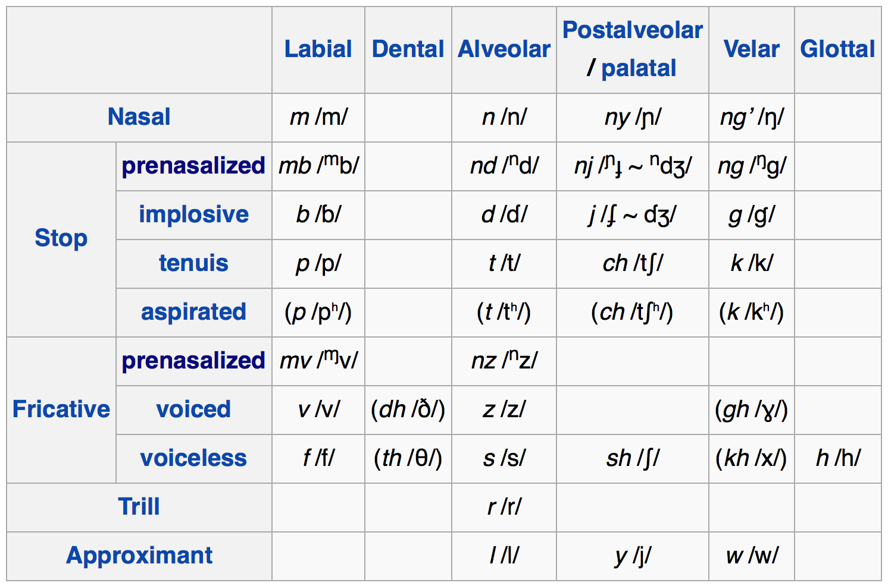
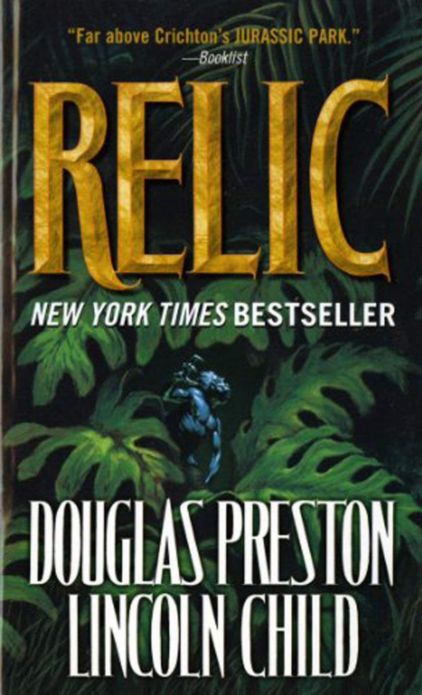
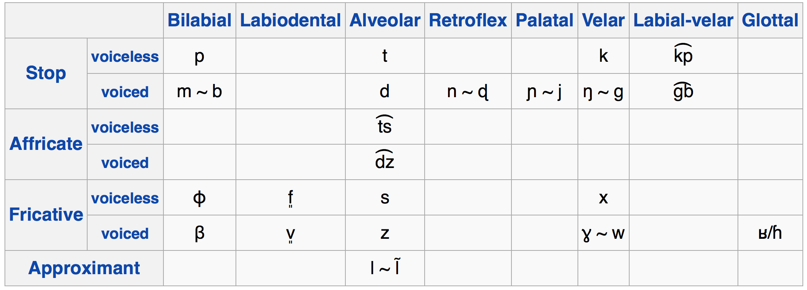
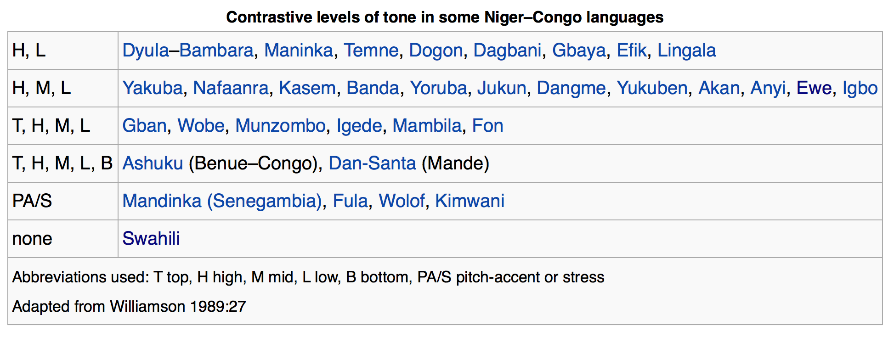
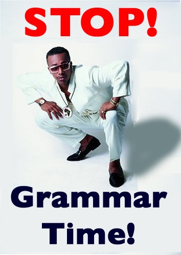
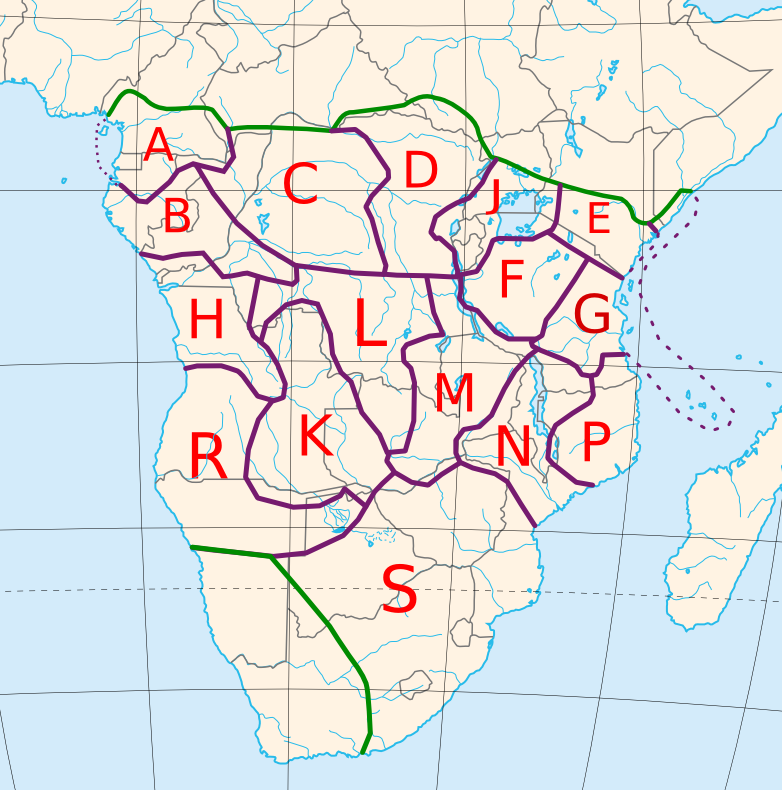
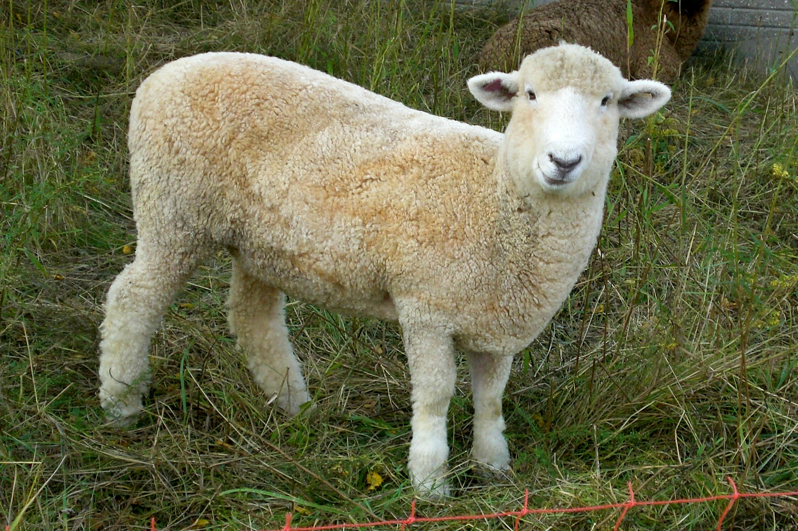
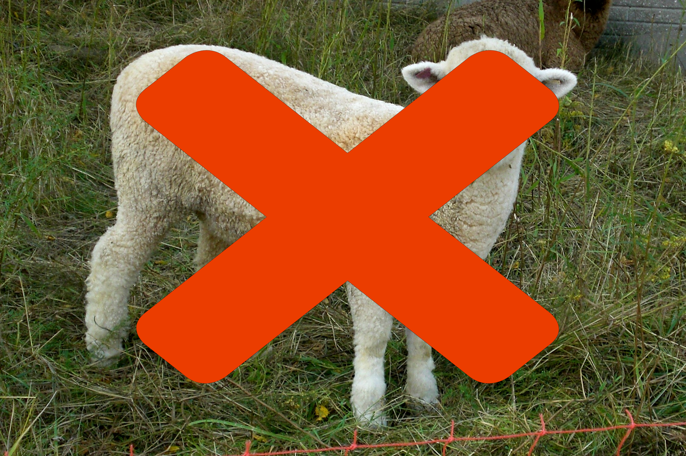
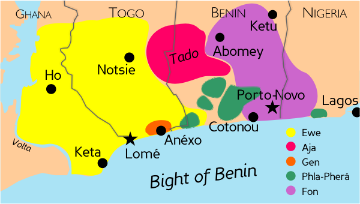

Ladysmith Black Mambazo - Lelilungelo Elakho
Monday, we’ll talk a bit more about the test
Last call for exam accommodations and early-takings.
For Friday, study the features of each language family
| ## Today’s Agenda |
| * Serial Verb Constructions! |
| * Niger-Congo! |
| * The Bantu Languages |
| * Ewe |
A phenomenon where multiple verbs act together to express a single and composite verbal meaning.
O-a-fa i swa n a-kle mi
he-ANT-take his house DEF ANT-show me
‘He has shown me his house’
o ti-wa-ra et́eré a
he hit-split.open-TENSE plate the
‘He shattered the plate’
Multiple verbs are used, but only a single combined meaning is expressed
All verbs share the agent and object
All verbs share the same temporal marking
The meaning often has to be paraphrased in translation
n-babas welik n-mot do
3sg-bite pig 3sg-die REAL
‘It bit the pig dead’
miyt ritm muh-hambray-an-m
tree insects climb-search:for-1sg-3pl
‘I climbed the tree searching for insects’
labele fo ́ sai lia ne’e
neg.can give exit voice this
‘You can’t reveal this matter!’
Language name hidden!
acwe alɔ rwot
1sg+fat+hab 1sg+exceed+hab king
‘I am fatter than the king’ (lit. I-fat I-exceed king)
The last example was from…
Language name hidden!
‘Hit the store, buy some fruit, and break this $100?’
(That was English)
Language name hidden!
Teenage Mutant Ninja Turtles di-a ren-a jalak-a Michael Bay
Teenage Mutant Ninja Turtles produce-3sg desecrate-3sg make.terrible-3sg Michael Bay
‘Michael Bay produced “Teenage Mutant Ninja Turtles” poorly’
Yeah, made that last one up
Common in Papuan, Austronesian, Amazonian, and Nilo-Saharan languages
They’re particularly common in…
This is a top-level language family
85% of Africa’s population speak a N-C language!
The largest family in the world in terms of number of languages (1514)
Very diverse, with lots of sub-families
Phun Phonetic Pheatures
Agglutinative Morphology
SVO (mostly)
Serial Verb Constructions
Noun classes!
Nasal->Consonant sequences that act like a single sound
|  |
These Nd-mb clusters are often used to sound “exotic”

“Mbwun - This carving is a representation of the mad god Mbwun, possibly carved by the Kothoga tribe of the Upper Amazon basin. This savage god, also known as He Who Walks On All Fours, was much feared by the other indigenous tribes of the area.” - Relic, Preston and Child
(Guaraní is the only language in Amazonas which we know uses prenasalized stops, and that’s down towards Paraguay)
(Nerd-rage aside…)
Making a stop with simultaneous gestures with the lips and back of the tongue

Ewe is a Gbe language
/eβegbe gbɔgblɔ/ - “Speaking Ewe”
/dzetugbe/ - “Beautiful”
/ele nyaɡblɔɡblɔ vivi tõ/ - “She’s telling an exciting/interesting story”
When nasality during the vowel changes the meaning of the word
beau (/bo/) - “beautiful”
bon (/bõ/) - “good”
tas (/ta/) - “heap”
temps (/tã/) - “weather”
Oral then Nasal
Nasal then Oral
(This is Will’s dissertation topic. Do not ask him about Nasalized vowels unless you’re prepared for some serious nerding.)

Where all vowels in the word have the same tongue root position.

Niger-Congo languages, especially Bantu, have really rich systems of grammatical gender and noun class
The Bantu languages are claimed to have 22 total noun classes, not present in all of them
| Ji-Ma: |
| * manufactured products, natural or built places, abstract or concrete concepts * sehemu za mwili [parts of the body] * atunda na vitu vya kawaida [fruits and natural objects] |
U - U:
(For more Swahili noun classes check this out)
Technically they’re “Niger-Congo:Atlantic-Congo:Benue-Congo:Southern Bantoid:Bantu”, but we just say “Bantu”
Comparatively well-studied, for African languages
Bantu languages took over many Khoisan-speaking populations
Prominent languages:
Several hundred languages (we can’t agree on how many)
We subdivide them into different zones based on geography

… What do you mean “140 million Swahili speakers, kind of”?
A language used for communication across different groups in an area
Only around 5 million people speak Swahili as a first language
… but more than 140 million speak it throughout Southeast Africa
Most Swahili speakers only use it when talking to people who don’t speak their native language
For many people, it contaminates or eventually replaces the native language

|  |
Niger-Congo, spoken by ~3.5m people, mostly in Ghana and Togo
Part of the Gbe subgroup of Niger-Congo

Niger-Congo, spoken by ~3.5m people, mostly in Ghana, Togo, and Benin
Part of the Gbe subgroup of Niger-Congo
Serial Verb Constructions!
SVO
No interesting noun classes
Labio-Velars, Contrastive Nasality, Level tones
tó ‘mountain’ (High tone)
tǒ ‘mortar’ (Rising tone)
tò ‘buffalo’ (Low tone)

Serial Verb Constructions are when multiple verbs combine to have a single meaning.
Niger-Congo is diverse, and has lots of fun features
The Bantu Languages are very common throughout Southern Africa
Ewe is an awesome language
Africa has massive linguistic diversity